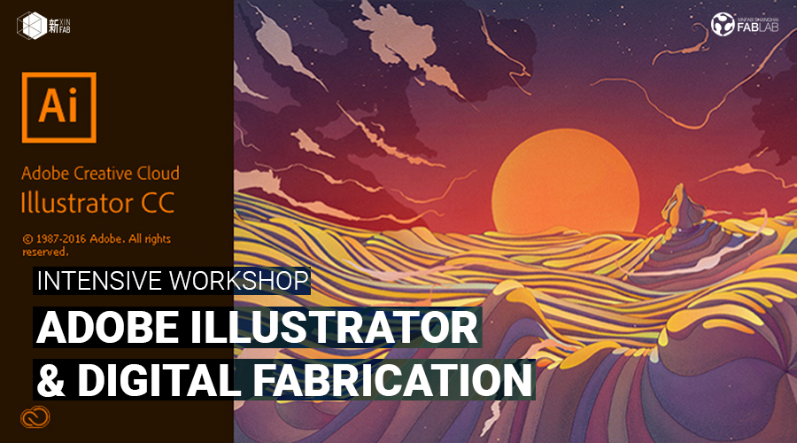
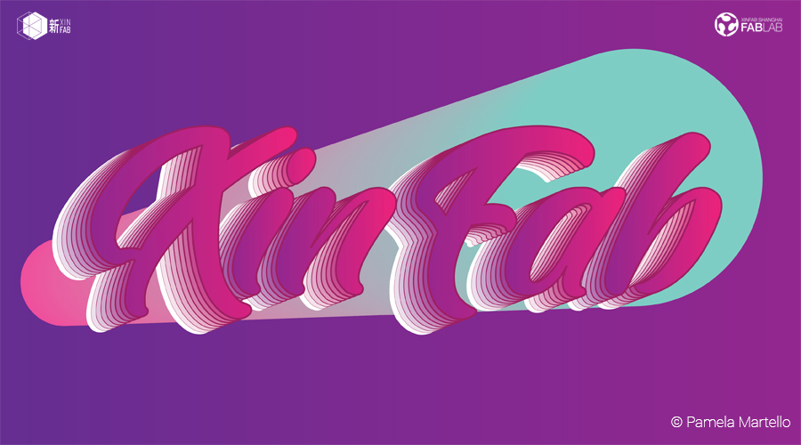
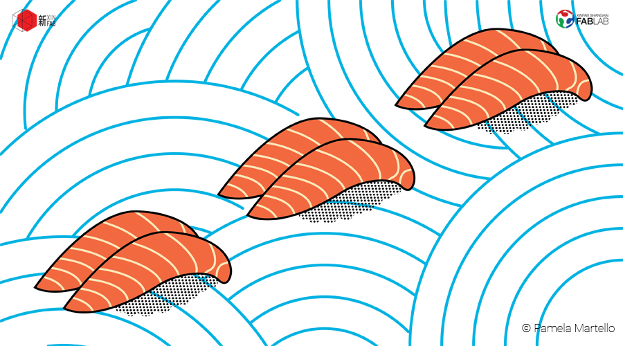
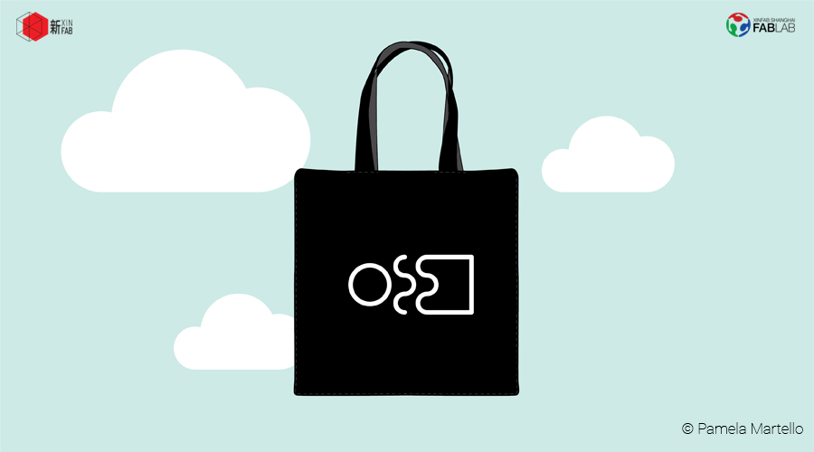
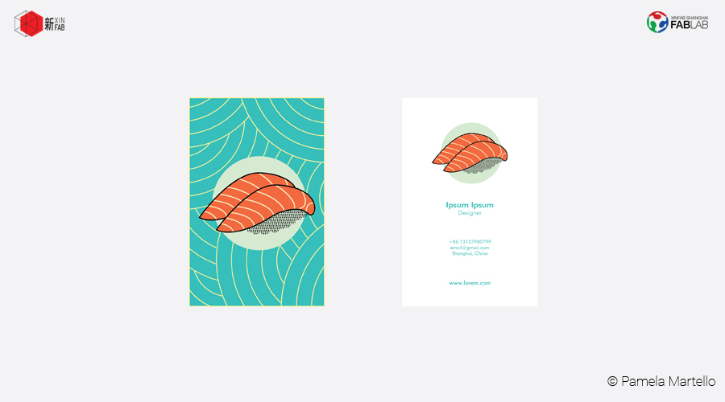
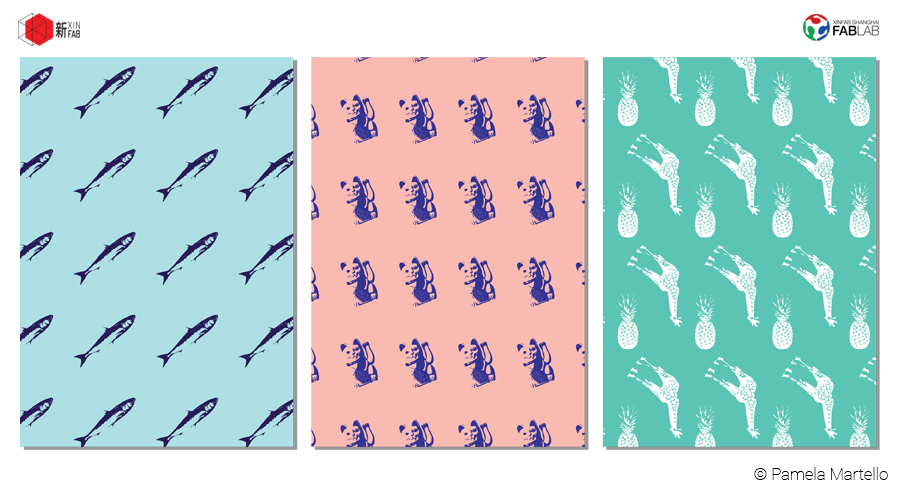
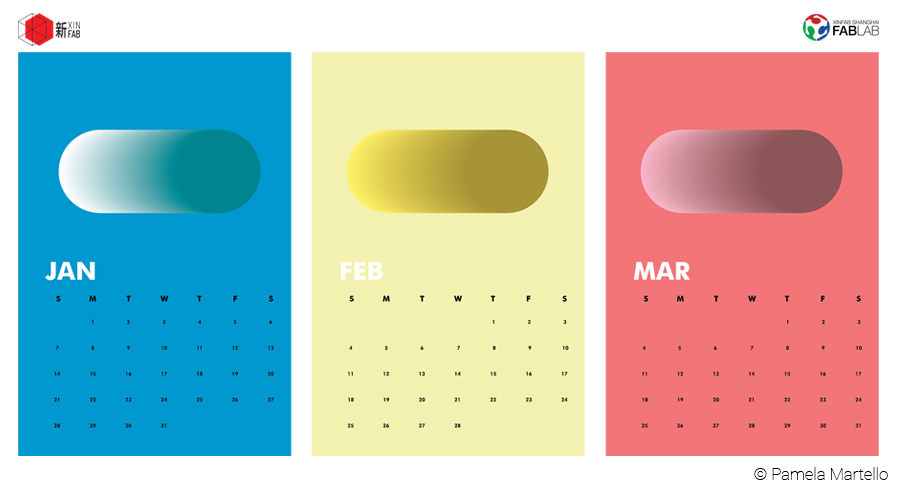
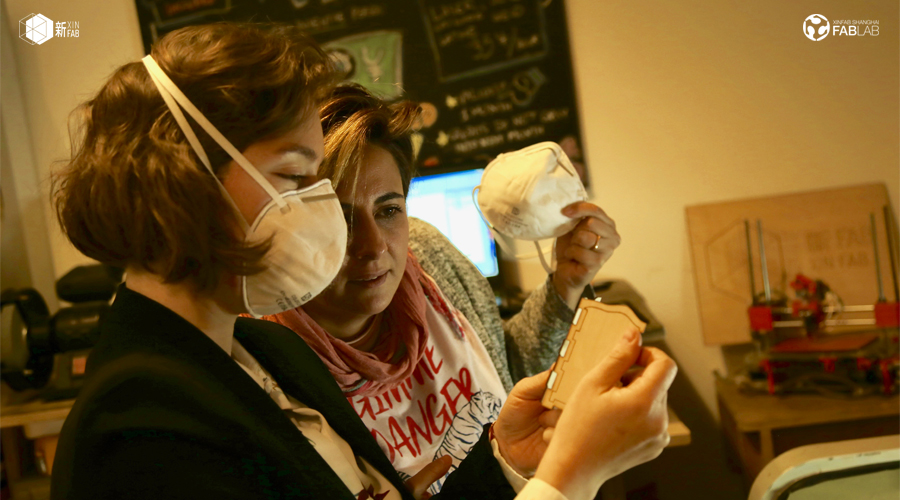
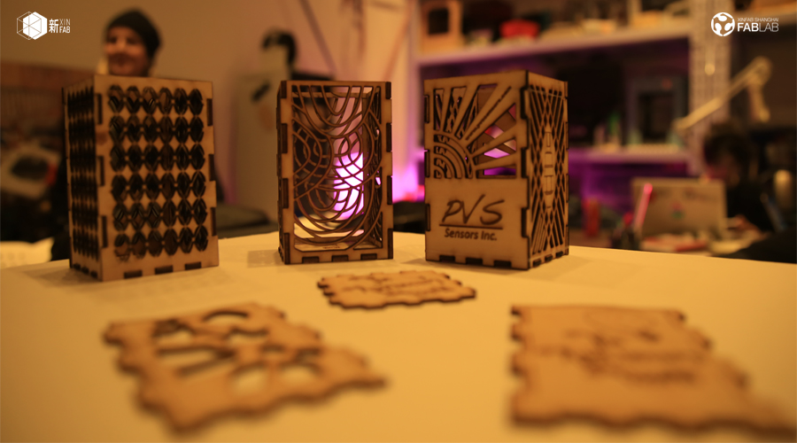
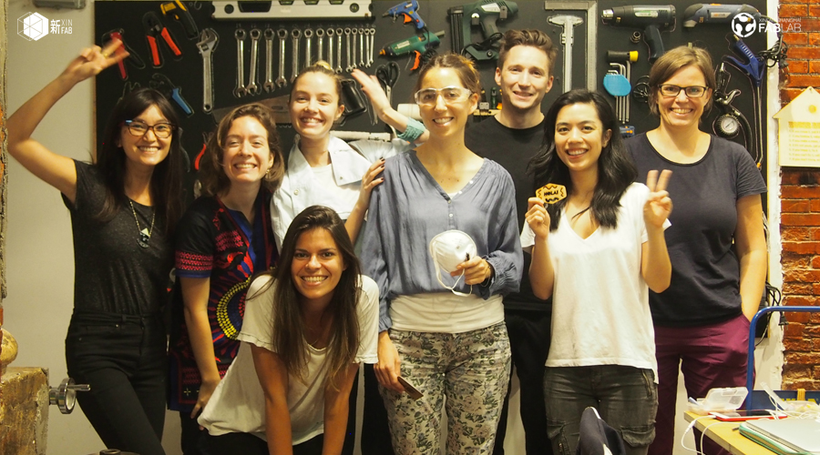

WORKSHOP
ILLUSTRATOR & DIGITAL FABRICATION INTENSIVE WORKSHOP - FROM 22 JANUARY-3 FEBRUARY 2018 (6 SESSIONS OVER 2 WEEKS)

***Workshop in English only***
When: January 22 to February 3 (2 weeks), 3 sessions/week (Mon & Wed from 6pm to 9pm / Sat from 10am to 4pm)
Where: Xinfab - Kangding East Rd, Lane 45, Building no.5, Room 102, Jing'an District
Price: Price 2200 RMB (Wechat 2220 RMB)
Pamela Martello is going to take you through this amazing tool from start to finish. She'll share with you her knowledge and tricks of 9 years of experience with Illustrator.
In this intensive workshop, you will start by getting familiarized with Illustrator, gradually move on to learning how to use its main tools and features, and then get a 2-dimensional design of your own to the finish line. In addition to Illustrator, you will also learn how to integrate your newly acquired vector design skills with Xinfab’s laser cutter and bring your prototypes to life. No previous knowledge is required!
Adobe Illustrator is the design industry’s standard for creating vector graphics. With it, you can design posters, business cards, banners, logos, websites – in sum, you can illustrate anything you want! By combining it with the laser cutter, you can also create 2-dimensional and 3-dimensional objects – the only limit is your imagination!
Your dedication is key. We invite you to practice after the lessons with some homework and maximize your takeaway from the course.
No previous Illustrator knowledge is needed, but you do need to be familiar with how to use a computer (in other words, Windows or iOS don't scare you and you understand basic commands like Ctrl C+Ctrl V).
Price includes:
// One month Xinfab Membership for you to DIY! (180 RMB worth of credits for machine usage within a month); Material for prototyping
Things you should bring:
// Your laptop and charger
// Mouse (this workshop can’t be followed without a mouse)
// Install Illustrator CC in your laptop (http://www.adobe.com/illustrator)
// Your passion, curiosity, and questions
The following are some examples of what you'll learn to do throughout the course: 
From posters to illustrations learn through the basics how to create the layouts for your design 
Learn how to apply Illustrator evenfor the design of a print: 
Learn how to create layouts for your own business card: 
Even how to create your very own pattern: 

Pamela and Eli (from the workshop's second edition) checking Eli's laser cut prototype: 
Some of the students' laser cut prototypes from the workshop's second edition: 
The first class of our Illustrator intensive workshop at the end of Fabrication Day 
WORKSHOP SCHEDULE
// DAY 1: HELLO ILLUSTRATOR (JAN 22, MONDAY, 6PM-9PM)
_Introduction to the software and its applications
_The basics: interface, create a file, size, toolbars, commands
_File configuration
_Basic tools: Selection tool, basic shape tools, arc, segment, scissors, artboard tool, fill and stroke, hand and zoom.
_Artboards
// DAYS 2 AND 3: GET CREATIVE (JAN 24, WEDNESDAY, 6PM-9PM AND JAN 27, SATURDAY, 10AM-4PM)
We will go deeper into the creation and manipulation of vectors, and you will do useful exercises to apply on your field, such as creating your own business cards, designing posters, and illustrations. Some of the commands we will cover are:
_Layers
_Guides and rulers
_Pen tool!
_Brushes
_Simmetry and rotation
_Interactive painting
_Shape creator
_Perspective grid
_Live Paint Bucket
_Type tool
_Eyedropper tool
_Gradient Tool
_how to apply some effects such as 3D effect, shadows..
// DAY 4: TRACE AND ENHANCE (JAN 29, MONDAY, 6PM-9PM)
_Image Trace
_How to retrace an image or photo
_Pathfinder
_Align
_Blend Tool
_Add, delete an anchor point (complimentary of Pen tool)
_Swatches
// DAY 5: PREPARE TO FAB (JAN 31, WEDNESDAY, 6PM-9PM)
_Introducing Digital Fabrication
_Project design for the laser
_Saving and/or exporting Illustrator files
_Troubleshooting
_Q&A for any doubts or clarifications needed from the previous lessons
// DAY 6: FABRICATION DAY (FEB 3, SATURDAY, 10AM-4PM)
_Review of the project prototype of each student
_Understading laser cutting and engraving
_Safety rules
_Learn how to use the machine
_Make your prototype!
///////////////////////////////////
HOW TO SIGN UP
SIGN UP DEADLINE: JANUARY 13
// ALIPAY (2200 RMB)
transfer the workshop fee to pay@xinfab.com (please indicate your phone number on the payment details so we can contact you!)
// WECHAT (2220 RMB - Wechat charges us a fee)
Enter our shop with your phone via this link and proceed to payment with Wechat Wallet
// CASH (2200 RMB)
come by our lab during our opening hours to book your spot.
Questions? Send an email to info@xinfab.com.
///////////////////////////////////
ABOUT THE TEACHER
Pamela Martello is a Mexican jewelry designer who has been creating original and stylish 3D and 2D designs for the past 9 years. Jewelry is Pamela's true love, but she has a decade-long love affair with graphic design and Illustrator, with which she complements her jewelry creations.
Pamela is a graduate from the European Institute of Design (IED) in Rome, Italy. She entered the IED through the big door, by winning a design competition and being awarded a scholarship. Upon graduating in jewelry design, Pamela took a graphic design specialization, also at the IED. In her career, Pamela has won multiple jewelry and graphic design awards, including an artwork design award for American Express. Pamela has been creating jewelry in Shanghai for the past 4 years.
Last year, Pamela discovered Xinfab and immediately joined our core team as a volunteer. She loves the laser and the 3D printers and is always experimenting in other fields related to design, where she finds inspiration for her creations. She has also taught many workshops with us. For Pamela, travelling, exploring, and living in different places offers a constant stream of stimulus for new ideas (plus a little fantasy too).